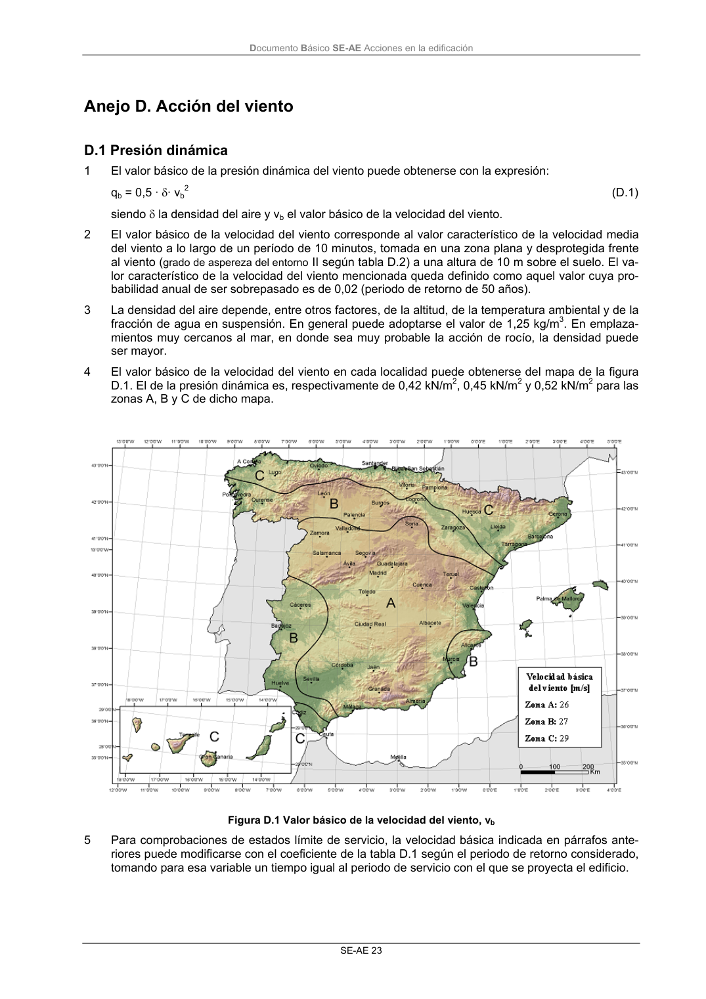

DB-SE-AE Acciones en la edificación · edición 2009-04 · capa oficial
Documento DB-SE-AE-oficial · SHA-256 del PDF 26116e5088955f0c6963a6187270cad282e1e7bf5a53a90f695c8fa50b4e4487
Copia fiel del PDF fuente · Fuente oficial
Ficha de la disposición en la fuente oficial
Formatos: JSON del segmento · Markdown
Anejo D. Acción del viento D.1 Presión dinámica D.1 Presión dinámica 1 El valor básico de la presión dinámica del viento puede obtenerse con la expresión: qb = 0,5 · δ· vb 2 (D.1) siendo δ la densidad del aire y vb el valor básico de la velocidad del viento. 2 El valor básico de la velocidad del viento corresponde al valor característico de la velocidad media del viento a lo largo de un período de 10 minutos, tomada en una zona plana y desprotegida frente al viento (grado de aspereza del entorno II según tabla D.2) a una altura de 10 m sobre el suelo. El va- lor característico de la velocidad del viento mencionada queda definido como aquel valor cuya pro- babilidad anual de ser sobrepasado es de 0,02 (periodo de retorno de 50 años). 3 La densidad del aire depende, entre otros factores, de la altitud, de la temperatura ambiental y de la fracción de agua en suspensión. En general puede adoptarse el valor de 1,25 kg/m3. En emplaza- mientos muy cercanos al mar, en donde sea muy probable la acción de rocío, la densidad puede ser mayor. 4 El valor básico de la velocidad del viento en cada localidad puede obtenerse del mapa de la figura D.1. El de la presión dinámica es, respectivamente de 0,42 kN/m2, 0,45 kN/m2 y 0,52 kN/m2 para las zonas A, B y C de dicho mapa. Figura D.1 Valor básico de la velocidad del viento, vb 5 Para comprobaciones de estados límite de servicio, la velocidad básica indicada en párrafos ante- riores puede modificarse con el coeficiente de la tabla D.1 según el periodo de retorno considerado, tomando para esa variable un tiempo igual al periodo de servicio con el que se proyecta el edificio. Documento Básico SE-AE Acciones en la edificación SE-AE 24 Tabla D.1 Corrección de la velocidad básica en función del periodo de servicio Periodo de retorno (años) 1 2 5 10 20 50 200 Coeficiente corrector 0,41 0,78 0,85 0,90 0,95 1,00 1,08
